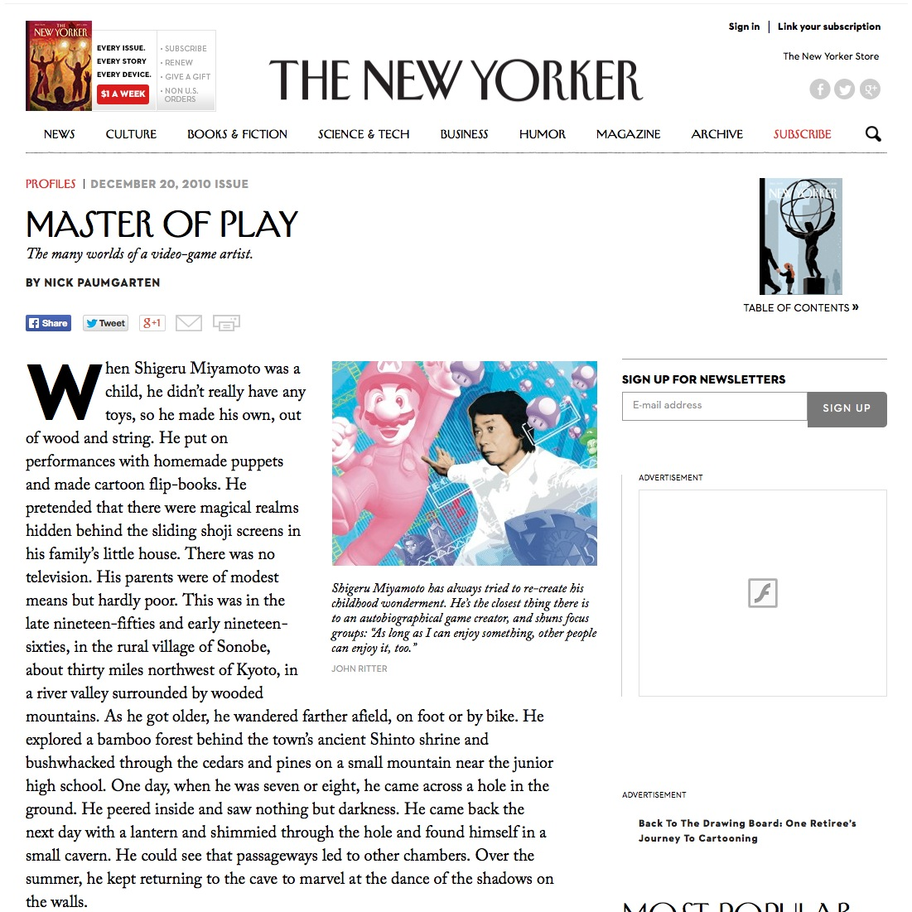

Master of Play - The New Yorker

What an interesting view into Shigeru Miyamoto - a man to whom I owe many thanks for taking my imagination to great places. I've had this sitting on my to-read list for a while, but once I actually started, I felt like I couldn't stop. I'm not sure I could go so far as to read a whole novel about him (yet), but this certainly filled my need for now.
Previously: The Last True Hermit - GQ.com Next: How To Be Polite